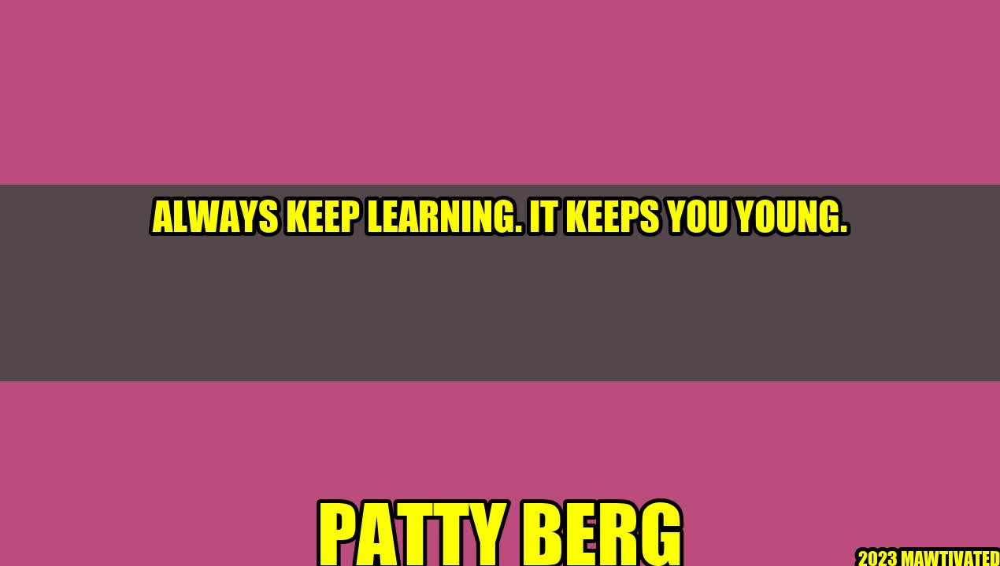

Always Keep Learning: It Keeps You Young

Have you ever heard of Harriet Thompson? She was a woman on a mission to stay young, and she did just that, by learning new things until the very end of her life. At 92 years old, Harriet became the oldest woman to ever run a marathon. What's even more impressive is that she did it again two more times, at the ages of 94 and 95. When asked about her accomplishment, she said, "I've always been learning. The day we stop learning is the day we start growing old."
Harriet's story is a powerful testament to the importance of always keeping learning. Whether you're young or old, there's always something new to discover, and the benefits are many.
Why is Learning Important?
Learning is not just important for personal growth and development, it also has many other benefits:
- It keeps your mind active and engaged, helping to prevent cognitive decline.
- It broadens your knowledge and understanding of the world, making you a more interesting and informed person.
- It improves your skills and abilities, making you better equipped to tackle challenges and achieve your goals.
- It enhances your creativity and innovation, helping you to come up with new ideas and solutions.
- It boosts your confidence and self-esteem, giving you a sense of accomplishment and pride in your achievements.
So whether you're interested in learning a new language, taking up a new hobby, or simply expanding your knowledge, there are many good reasons to make learning a lifelong pursuit.
Practical Tips for Lifelong Learning
If you're ready to start your own journey of lifelong learning, here are some practical tips to get you started:
- Set aside time for learning each day: Whether it's 10 minutes or an hour, make a commitment to dedicate some time each day to learning something new.
- Choose topics that interest you: Learning is most effective when you're engaged and interested in the subject matter. So choose topics that you're passionate about and you'll be more likely to stick with it.
- Use a variety of learning methods: Don't just rely on one method of learning. Mix it up with books, videos, podcasts, online courses, and other resources.
- Find a learning community: Connect with like-minded people who share your interests and can support and inspire you in your learning journey.
- Challenge yourself: Set goals and push yourself out of your comfort zone to take on new and challenging learning experiences.
Conclusion
In conclusion, lifelong learning is an essential part of staying young and engaged with the world around us. By committing to learning each day, choosing topics that interest us, using a variety of learning methods, connecting with others, and challenging ourselves, we can continue to grow and thrive at any age.
- Learning is important for personal growth and development.
- There are many benefits to lifelong learning, including cognitive health, creativity, and confidence.
- Practical tips for lifelong learning include setting aside time, choosing interesting topics, using a variety of learning methods, finding a community of learners, and challenging ourselves to grow.
Author: Patty Berg
Examples:
"Change is the end result of all true learning." – Leo Buscaglia
Here's an example of a quote that illustrates the power of learning to create change. Whether it's changing ourselves or changing the world around us, learning is a key ingredient in the process.
Category: Personal Growth and Development
Trending Hashtags:
- #lifelonglearning
- #personaldevelopment
- #neverstoplearning
- #alwaysgrowing
Curated by Team Akash.Mittal.Blog
Curated by Team Akash.Mittal.Blog
Share on Twitter Share on LinkedIn